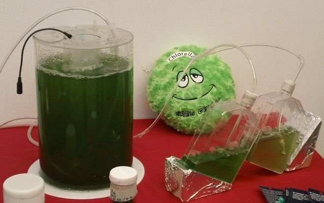
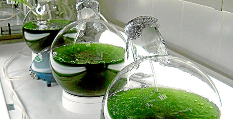

Producción de biodiesel a partir de microalgas
Producción de biodiesel a partir de microalgas
En un laboratorio del Instituto Politécnico Nacional se desarrolla el proceso de producción de biocombustible a partir de algas. La rápida reproducción de algas es lo que hace del biocombustible un recurso inagotable, en comparación con la escasez de los combustibles provenientes del petróleo, puesto que estos no son renovables y se agontan con el paso del tiempo. Además, produce menor cantidad de C02, principal gas causante del efecto invernadero. El efecto invernadero es una elevación de la temperatura de la atmósfera que se produce como resultado de la concentración en la atmósfera de gases.
